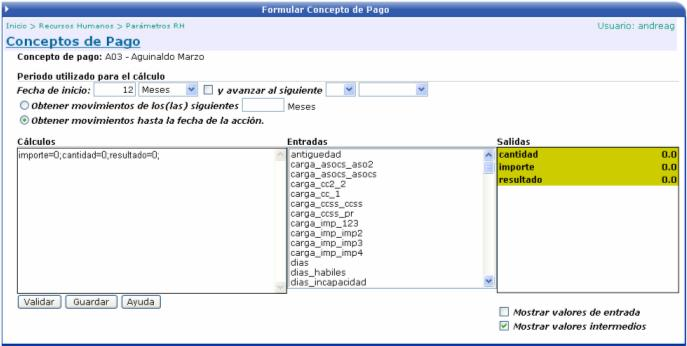

Los conceptos de pago son todos aquellos rubros que aumentan el salario de los funcionarios.
Código: conjunto de caracteres para identificar el concepto de pago.
Descripción: corresponde a una breve descripción del concepto de pago.
Factor: elemento por el cual se multiplicará el rubro, para calcular el monto a pagar.
Método: seleccionar entre horas, días, importe o cálculo
Rango Mínimo: se define un valor mínimo permitido para el registro de incidencias.
Rango Máximo: se define un valor máximo permitido para el registro de incidencias.
Negativo: un concepto de pago de este tipo significa un rebajo en el salario del empleado, ya sea que por error se le pago un monto que no le correspondía o por rebajo de horas, entre otros.
Objeto de Gasto: se puede especificar el objeto de gasto, para que cuando se realicen los movimientos contables de la nómina, saber cual es la cuenta que se va a ver afectada.
Los dos primeros checks, solamente se activarán para conceptos donde el método sea igual a Importe y el check “Afecta Vacaciones” se activa cuando el método es igual a Cálculo. Los demás checks quedan a escogencia del usuario.
Una vez creado el concepto de pago y si
éste es de Cálculo, cuando se selecciona para trabajar con él, aparece
el botón 

En esta pantalla el usuario puede crear fórmulas para realizar diversos cálculos. Por ejemplo el del Aguinaldo. El único cuidado que debe de tener es el de dejar el resultado del cálculo en la variable Resultado.

Tiene la opción de trabajar con variables ya definidas, las cuales las puede escoger de la lista que se presenta en la sección de Entradas, y los valores de las variables los puede observar en la sección de Salidas. Una vez creada la fórmula se presiona el botón VALIDAR y luego el botón GUARDAR.